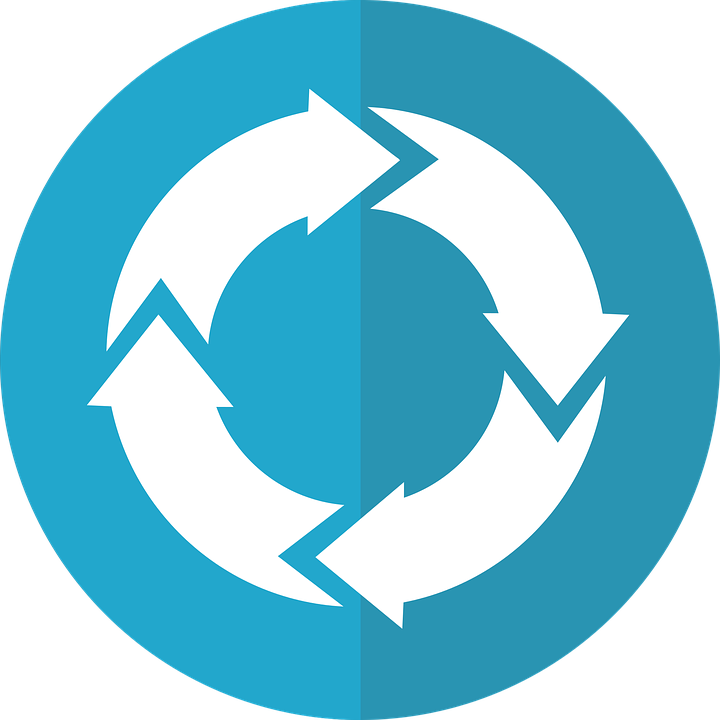

The Differences between Recursive and Iterative Traversal
Methods
Recursion
Recursion is the method of traversing through data structures by
making a function that does one simple traversal and then it calls
itself again and again until the base case is reached. The base case
is when the traversal should stop or when the data is found.
A good way to think about recursion is by thinking about what
happens when you put a mirror in front of another mirror. One mirror
will show the other mirror over and over until it is too small to
see. In other words, the mirror is showing an image and then
repeating it's task.
One data structure that benefits from recursion and can not easily
be done with iteration would be a linked list. To find some data all
that would need to be done is go to the next node (or specific node
if there is more than one) and check if it has the right data. If
not, go to the next one until the data is found or the end of the
list is reached.
Iteration

Iteration is the method of traversing through data structures by
index. If the data structure has indices then the data in it can be
randomly accessed and as long as the number of elements is known,
any element can be obtained.
Iteration is like finding the page of a book. You need to flip
through the book to find the page number.
One data structure that works well with iteration is an array like
a vector. They are indexed so to navigate through them you need to
go through the elements which is what iteration is for.